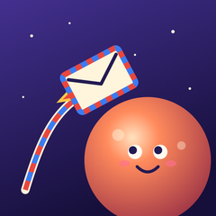

Interstellar Postman
Draw a route with your finger — the mail ship flies along it and delivers letters to the planets.
Межзвёздный почтальон · Міжзоряний листоноша
Support
Found a bug, lost your progress or have a question about a purchase? Write to us — we usually answer within 2 working days.
Please include your device model, the system version and the level number, if it is about a specific level.
Restore purchases
Open the Shop and tap Restore purchases. Use the same Apple ID or Google account that made the purchase.
Lives and stamps
Lives refill on their own over time. Stamps are earned for new stars and first-time completions.
Ad settings
In the EEA, the UK and Switzerland you can change your ad consent in Settings → Ad settings.
Privacy
No accounts, progress stays on your device. Read the Privacy Policy.
Поддержка
Нашли ошибку, пропал прогресс или есть вопрос о покупке? Напишите на m.buryak.developer@gmail.com — отвечаем обычно в течение 2 рабочих дней. Восстановить покупки: «Магазин» → «Восстановить покупки». Политика конфиденциальности.
Підтримка
Знайшли помилку, зник прогрес або є питання щодо покупки? Напишіть на m.buryak.developer@gmail.com — зазвичай відповідаємо протягом 2 робочих днів. Відновити покупки: «Магазин» → «Відновити покупки». Політика конфіденційності.